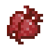
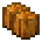
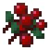
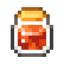
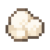

묶음
세레니티 농작물 가공시설
타코야끼~ 스키야끼~ 케밥에~ 테리테리 소스노 야끼소바~~
기본 제작 + 대량 제작묶음 · 베이스 · 가공 식재료요리 도감과 같은 방식으로 정리
묶음 / 기본 가공
챠루메라 라멘~.
묶음
감자 묶음 ×1

묶음
비트 묶음 ×2

묶음
호박 묶음 ×2
묶음
수박 묶음 ×2

묶음
달콤한 열매 묶음 ×1
가공 식재료
설탕 큐브 ×1
묶음 / 대량 가공
어떻게든 돼라!!
대량 묶음
당근 묶음 ×7
대량 묶음
감자 묶음 ×7
대량 묶음
비트 묶음 ×14
대량 묶음
호박 묶음 ×14
대량 묶음
수박 묶음 ×14
대량 묶음
달콤한 열매 묶음 ×10
대량 가공 식재료
설탕 큐브 ×10
베이스
자기 자신을... 간 이라고 생각하세요 -쿠리만쥬-

베이스
토마토 베이스 ×1
베이스
양파 베이스 ×1
베이스
마늘 베이스 ×1
가공 식재료 / 기본 제작
술 자격증..
가공 식재료
치즈 조각 ×1

가공 식재료
밀가루 반죽 ×1
가공 식재료
버터 조각 ×1
가공 식재료
요리용 소금 ×1
가공 식재료 / 대량 제작
카니야 진짜 고맙다.
대량 가공 식재료
치즈 조각 ×24
대량 가공 식재료
밀가루 반죽 ×24
대량 가공 식재료
버터 조각 ×24
대량 가공 식재료
요리용 소금 ×24
진짜 카니가 보살입니다 저희 모몽가를 챙겨주고 ㅜㅜㅜㅜㅜ.